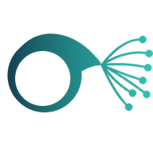

For drivers who deliver for Amazon's Delivery Service Partners in Massachusetts — and for the DSPs that hire them.
If you deliver for a DSP — or want to — you keep one profile, you choose who sees it, and a coach helps you stay DSP-ready, through a break and back. If you run a DSP, you look through drivers who asked to be found, and you reach them directly. Driver360 is independent: it is not affiliated with Amazon, and Amazon does not endorse it.
See where DSPs post their openings — Amazon's official page, checked by hand — and join the pool once, whether you are looking now or taking a break.
See where DSPs are hiring → 🏢Tell us how many drivers, which station and when. You reach the driver directly, and you see only what they chose to share.
Tell us what you need →
Put it on your phone and it opens like any other app — DSP openings, your pool profile and your coach, straight from the home screen. It also keeps working when you lose signal.
Free. No app store, no account, and it takes about a second — the app installs from this page.
The pool is free for drivers and stays free — drivers are what make everything else worth anything. DSPs pay, because they are the ones who hire. The coach keeps a driver DSP-ready from one DSP to the next — it does not repeat the DSP's training.
For DSP drivers
One profile, filled in once, that DSPs can find — when you choose.
No account, no payment, and we sell nobody's name.
For DSPs
Reach drivers who asked to be found, without going through an agency.
$15 for an extra contact. Free founder codes for the first DSPs.
For DSP drivers
Amazon and your DSP train you for the job. The coach helps you stay ready and current.
Free while we launch. It will become paid — anyone who starts now keeps their access.